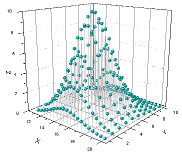
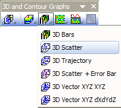

3D-Punktdiagramm
Mat-3DScatter
- 
Datenanforderungen
-
- Wählen Sie mindestens eine Z-Spalte aus (oder einen Bereich aus mindestens einer Z-Spalte). Falls die Z-Spalte verbundene XY-Spalten besitzt, werden die XY-Spalten verwendet; ansonsten werden die XY-Standardwerte des Arbeitsblatts verwendet.
-
oder
oder
- Matrix: Eine Matrix von Z-Werten
Diagramm erstellen
Aktivieren Sie das Matrixblatt oder wählen Sie die gewünschten Daten im Arbeitsblatt aus.
Wählen Sie im Menü für die Arbeitsblattdaten ; wählen Sie für die Matrixdaten .
oder
Klicken Sie auf die Schaltfläche 3D-Punktdiagramm der Symbolleiste 3D- und Konturdiagramme.
- 
Vorlage
Arbeitsblatt
-
Matrix
-
- gl3DSCATTERMAT.OTP (OpenGL)
- 3DSCATTERMAT.OTP
(installiert im Origin-Programmordner)